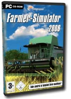

In "Farming Simulator" you are a farmer and will experience the versatile everyday life of a Farmer. Take a seat behind the steering wheel of the different detailed agricultural engines and carry out your work in the fields. Youve got to plow your fields, sow the seeds, reap or station the harvest to store it in the silo or deliver it to the next harbour.
The life of a farmer is hard, and so the player has to steer his heavy vehicles around the clock to earn his keep of life. As in the real world of farming the weather isnt always on your side, and rain and hail give you a hard time.
Additionally different missions have to be mastered, you also have the possibility to move absolutely free within this huge game world.

FEATURES
- day and night change
- weather change
- career mode
- lots of different missions
- large selection of very detailed vehicles
- download more vehicles over the internet
SYSTEM REQUIREMENTS
- AMD/Intel 2 Ghz
- Nvidia Geforce 6800 Series / ATI Radeon X850 (min 128 MB VRAM)
- 512MB RAM
- soundcard
- 1GB free hard drive space
Download the game here